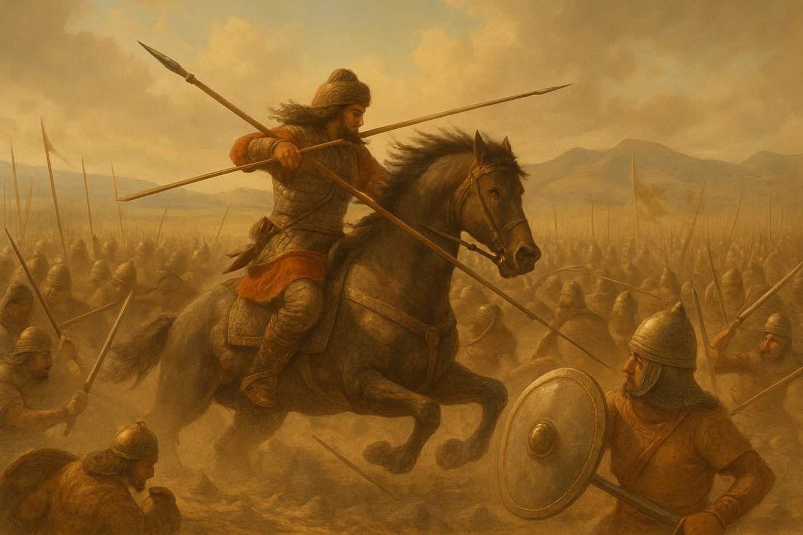
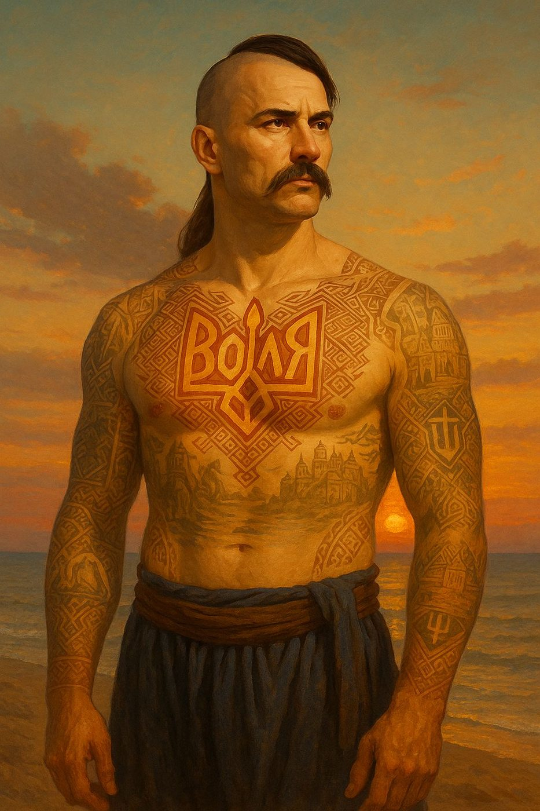
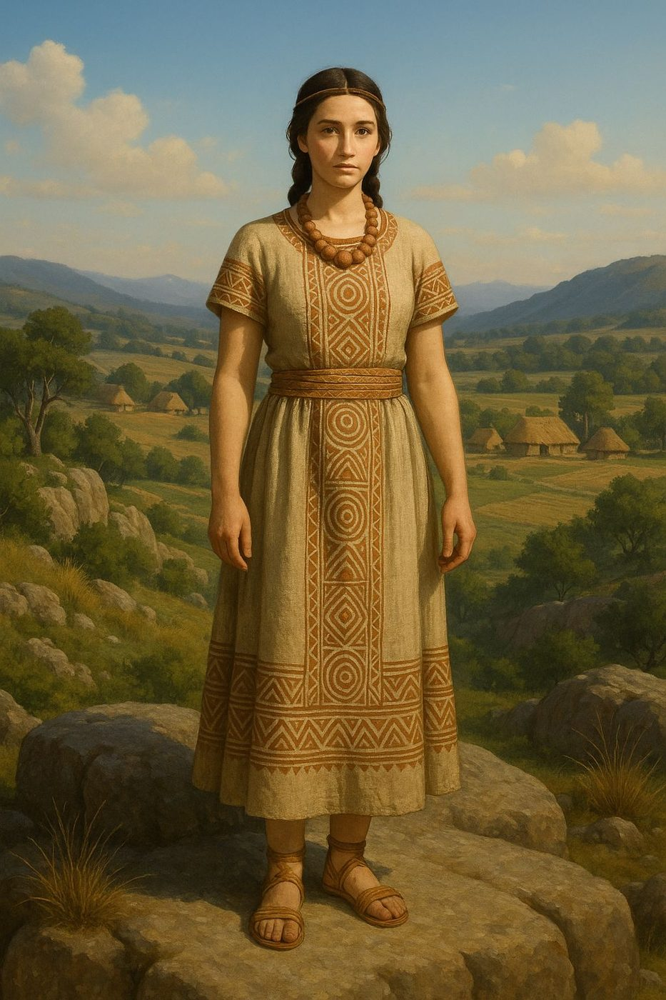
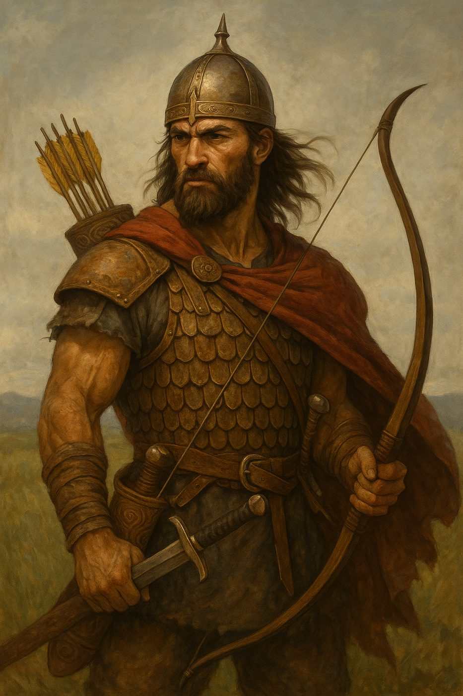
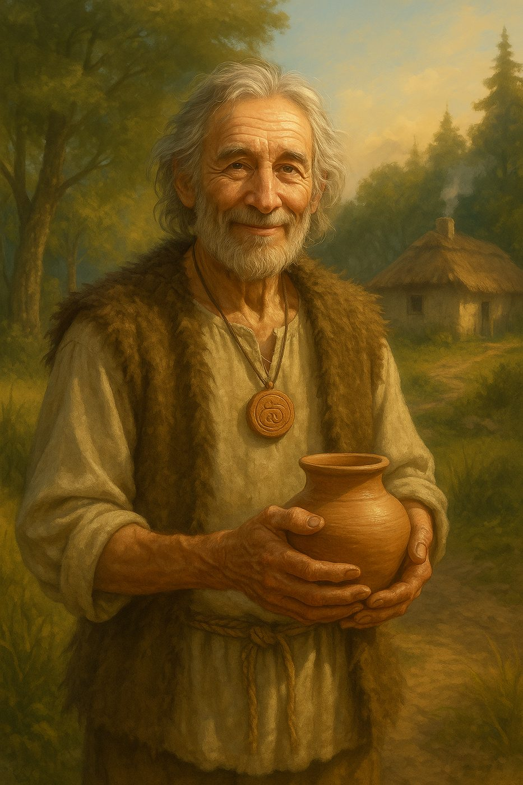
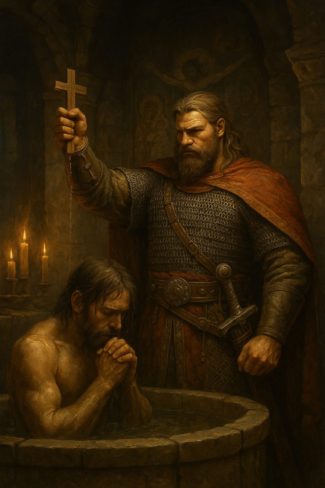
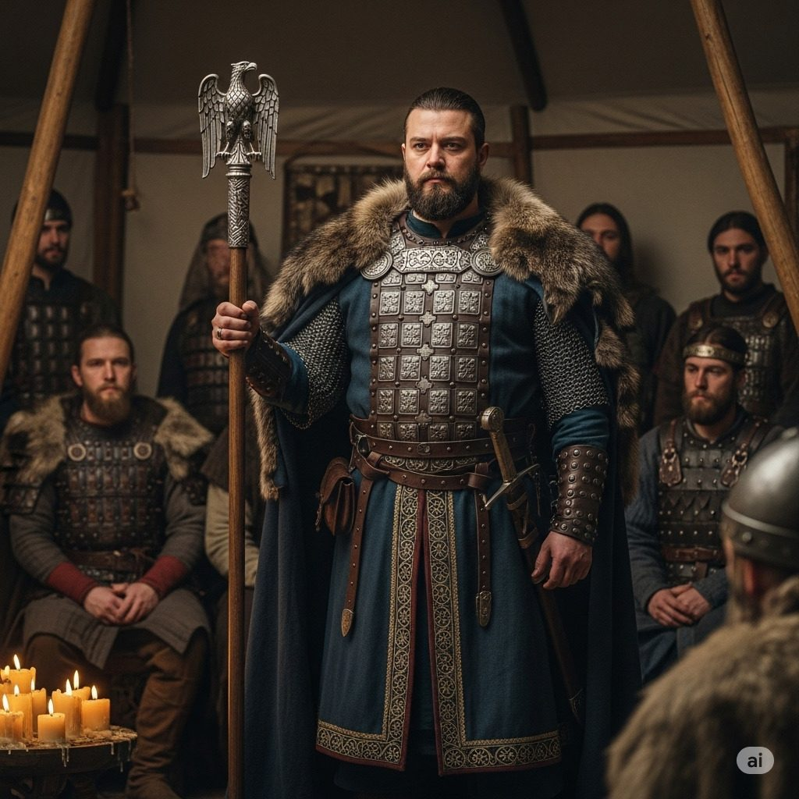
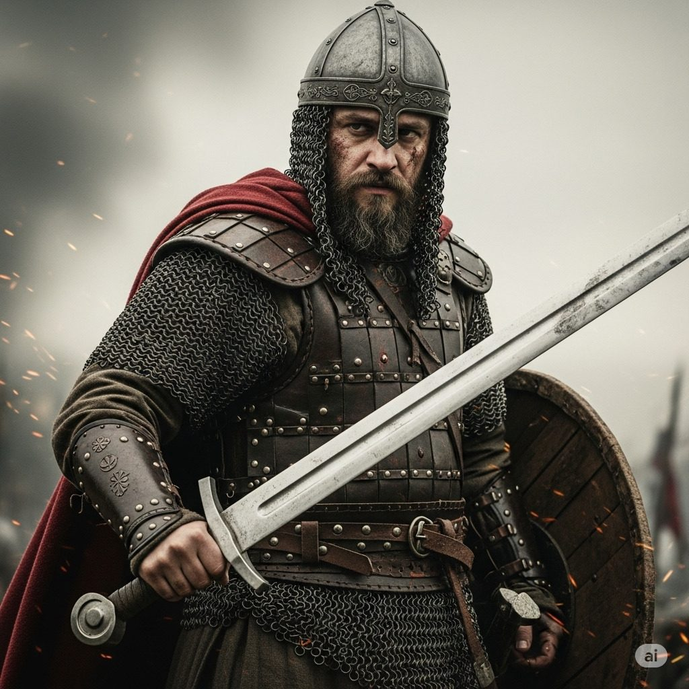
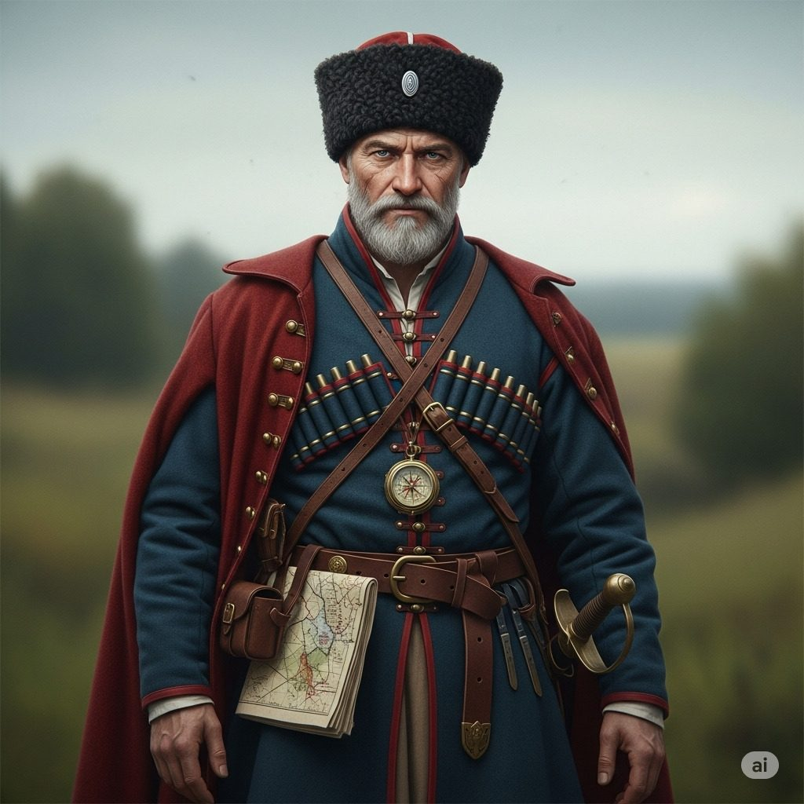
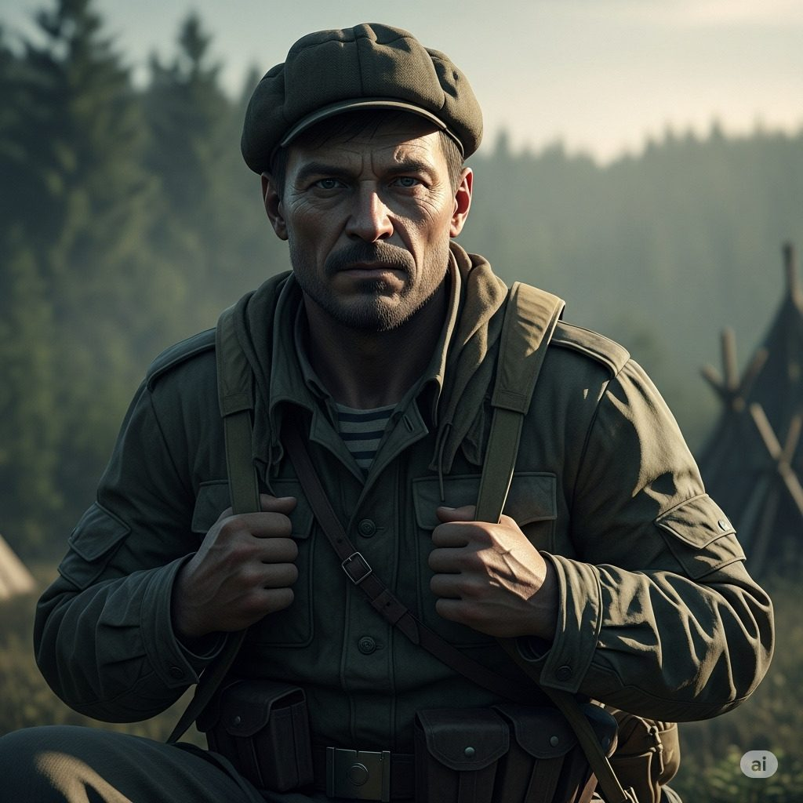

Проєкт «ВОЛЯ»
ВОЛЯ — лінійна 3D action-adventure, у якій ви проживаєте ключові епохи української історії очима тих, хто в них жив: воїнів, цілительок, майстрів, розвідників. Кожна епоха — окремий світ зі своїми героями, ворогами й правилами бою. Ми працюємо з істориками, щоб одяг, зброя, побут і події були якомога достовірнішими.
Гра виходитиме модулями — епоха за епохою. Перший модуль, «Шлях воїна», переносить у скіфський степ 513 року до н.е., коли на скіфів пішов походом перський цар Дарій. Кожен модуль ми доводимо до ладу разом із гравцями: випускаємо демо, слухаємо відгуки, вдосконалюємо. Героїв пов'язує кров і пам'ять роду — нитка, що тягнеться від трипільського поселення до сучасного окопу.
Ключові особливості
-
Кожен суперник — двобій
Бій у «ВОЛІ» — не натискання кнопок навмання. Витривалість, блок, парирування з рипостом, ухили й стійки, що змінюють ваші прийоми; суперники, які показують замах і карають за помилки. Навіть рядовий ворог може вбити необережного, тож кожна сутичка нагадує двобій у файтингу. Саме бій — серце гри: близько 60% часу ви проведете в бою, 30% — у дослідженні світу, 10% — у сюжетних сценах.
-
Механіка «Волі»
Воля — внутрішня сила героя в межах його епохи. Вона зростає від сміливих і чесних вчинків, дотриманого слова й захисту слабших — і падає, коли герой зраджує себе. Воля відкриває нові варіанти в розмовах, впливає на союзників і на те, чим закінчиться епоха. До наступної епохи переходить не сама Воля, а спадок — те, що рід залишає нащадкам.
-
Кожна епоха грається по-своєму
Скіфський степ — це кінний бій, стрільба з лука на скаку (навіть назад, через плече) і тактика «вдар і відійди». Київська Русь — дружинний бій і оборона прикордонних фортець, козацька доба — шабля, чайки й морські походи, ХХ століття — підпілля й засідки. Кожна епоха складається з кількох місій із чіткою драматургією, без розмитого відкритого світу.
-
Вибори, що мають ціну
Що важливіше — наказ чи совість? Свій рід чи чужі люди, які годували вас хлібом? Рішення в грі не поділяються на правильні й неправильні: кожне має ціну, змінює долі персонажів, Волю героя і фінал епохи.
-
Розмови зі ШІ (у розробці)
Ми експериментуємо з діалогами на основі штучного інтелекту: ключовим персонажам можна буде відповідати власними словами, а не лише обирати репліку зі списку. Співрозмовники пам'ятатимуть сказане й реагуватимуть з огляду на вашу Волю. Цю систему ми впроваджуємо поступово — лише там, де вона робить історію сильнішою.
-
Живий канон
Гра постійно оновлюватиметься: персонажі розвиватимуться, сюжетні лінії поглиблюватимуться, а історичні деталі уточнюватимуться за новими дослідженнями. Канонічною вважається остання випущена версія гри.

Демо «Шлях воїна»: спробуй бойову систему
Демо працює просто в браузері, без встановлення. Ви — скіфський воїн Аргіс: табір, степ, напад на перський обоз і серія двобоїв — з наставником, з перським чемпіоном, кулачний бій із силачем Тавром і поєдинок з амазонкою. Демо навмисно складне: кожен суперник вимагає уваги й терпіння.
- Стійки, серії в ритм, важкий удар, що ламає блок
- Блок, парирування й рипост, ухил перекатом
- Кулачний бій: голова, корпус і ноги, обхід, нокаут
- Арена з наставником, який навчить кожного прийому
Потрібен комп'ютер із клавіатурою та мишею. Текст демо поки що лише українською.
Герої: від пращурів до нащадка

Олесь — наш сучасник, розвідник. Останній нащадок роду, якому пам'ять крові відкриває життя пращурів.
Історія Олеся →
Зоряна — трипільська цілителька. Та, з якої почався рід і перший поклик Волі.
Історія Зоряни →
Аргіс — скіфський вершник і розвідник, син вождя. Герой першого модуля «Шлях воїна».
Історія Аргіса →
Радим — слов'янський гончар, який словом, а не мечем згуртував племена проти набігів.
Історія Радима →
Володимир — воєвода ранньої Русі, оборонець південного порубіжжя від печенігів.
Історія Володимира →
Мирослав — дружинник і посланець, що зупинив братовбивчу битву князів перед половецькою загрозою.
Історія Мирослава →
Святослав — богатир, який стояв до останнього на Калці в 1223 році.
Історія Святослава →
Орест — полковник-розвідник, що боровся за єдність Гетьманщини на Чорній раді 1663 року.
Історія Ореста →
Калина — старий повстанець УПА, чий спокій тримав молодий загін у першому бою.
Історія Калини →Усі герої — один рід, а Олесь — його нащадок у наші дні. Через пам'ять крові він бачить життя пращурів, а ви їх проживаєте: у кожного героя своя епоха, свій стиль бою і своя ціна свободи.
Епохи «ВОЛІ»
Гра охопить сім епох: Трипілля, скіфську добу, давніх слов'ян, Київську Русь, козацьку добу, ХХ століття і сучасність. Це дуже різні світи — з різною зброєю, ворогами й способом життя, — але в кожному з них хтось із роду обирає між власним спокоєм і свободою свого народу.
Кожна епоха — окремий розділ великої саги, а спадок кожного предка відгукнеться у фіналі. Порядок виходу та вміст епох — на сторінці дорожньої карти.
Воля, спадок і дипломатія
Воля — не шкала здібностей і не суперудар. Це міра того, наскільки герой лишається собою, коли доводиться вибирати.
- Розмови. Висока Воля відкриває сміливіші й чесніші відповіді: переконати, примирити, відмовити сильнішому.
- Союзники. Люди йдуть за тим, хто тримає слово. Від Волі залежить, хто стане поруч у вирішальну мить — і хто відвернеться.
- Спадок. Наприкінці епохи Воля героя стає спадком — річчю, звичаєм або пам'яттю, що переходить до наступного покоління. У фіналі Олесь спирається на все, що залишили йому пращури.
Команда
«ВОЛЮ» створює невелика команда ентузіастів, які люблять ігри й історію і хочуть розповісти світові про Україну мовою, зрозумілою кожному гравцеві.
Ми шукаємо однодумців: розробників, художників, аніматорів, сценаристів, істориків, фахівців зі штучного інтелекту. Якщо вам близька ця ідея — долучайтеся.
Стань частиною «ВОЛІ»
Розробники, художники, сценаристи, історики, інвестори — разом ми зробимо гру, яка покаже українську історію так, як її ще не показували.
Вакансіїабо напишіть нам напряму:
ukrvolley@gmail.com